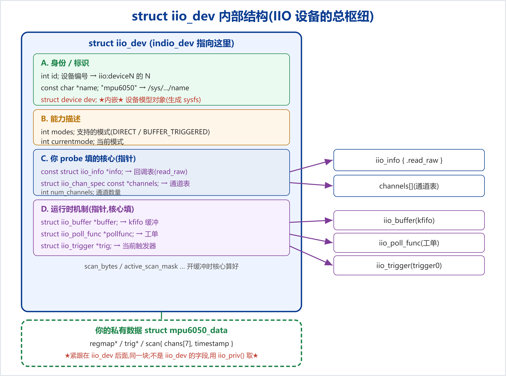
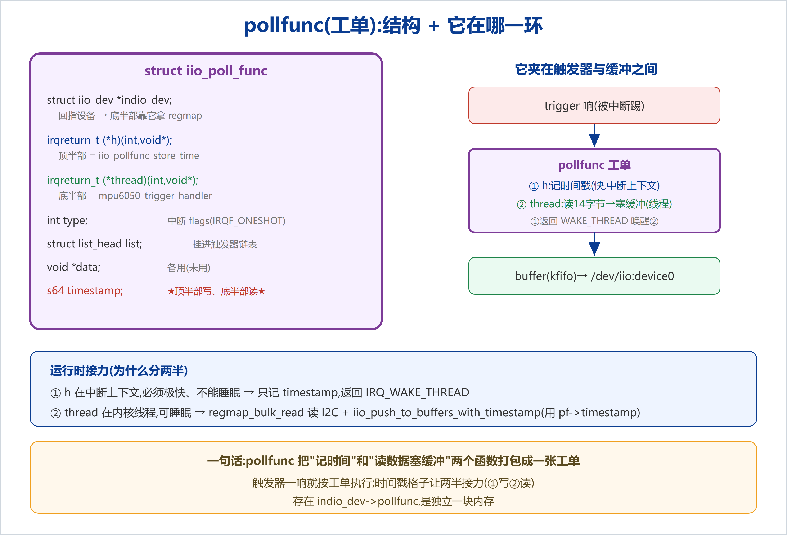
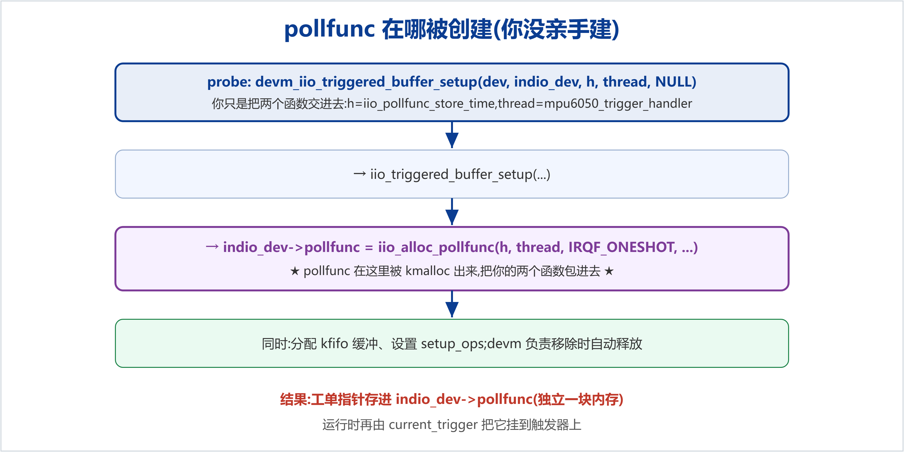

触发缓冲驱动里有两个结构体最该吃透:struct iio_dev(整个 IIO 设备的总枢纽,probe 里填它、注册它)和 struct iio_poll_func(pollfunc)(触发器与缓冲之间的"工单")。本文用图+表把它们的内部结构、每个字段、在哪创建讲清。
indio_dev 是指向 struct iio_dev 的指针。这个结构体把"设备是谁、能干啥、怎么读、运行时挂了哪些机制"全登记在一起。按作用分四组看:

| 组 | 字段 | 作用 |
|---|---|---|
| A 身份 | id | 第几个 IIO 设备 → iio:device0 的 0;触发器名 "%s-dev%d" 的 %d |
name | 设备名 "mpu6050" → /sys/.../name | |
dev | 内嵌的 struct device(Linux 设备模型对象,sysfs 目录由它生成) | |
| B 能力 | modes | 支持的模式:INDIO_DIRECT_MODE;触发缓冲补 INDIO_BUFFER_TRIGGERED |
currentmode | 当前所处模式(核心维护) | |
| C 核心(你填) | info | 指向 iio_info 回调表(含 read_raw) |
channels/num_channels | 指向通道表+数量 → 核心据此生成 sysfs、解析缓冲帧 | |
| D 运行时 | buffer/pollfunc/trig | 指向 kfifo 缓冲 / 工单 / 当前触发器(核心填) |
scan_bytes/active_scan_mask | 开缓冲时核心算:选了哪些通道、一帧多少字节 |
mpu6050_data 不是 iio_dev 的字段,而是 devm_iio_device_alloc 时紧跟其后的一段,用 iio_priv(indio_dev) 取。所以 probe 的本质就是:填好 C 组(info/channels)→ 建起 D 组(缓冲/触发器)→ 注册。核心运行时就靠读这张"登记表"来回调你、生成接口、搬数据。
触发器只会喊"滴答",它不知道该读什么;缓冲是目标,但得有人去填。pollfunc 就是夹在中间的工单,写明"滴答一到,先记时间,再读一帧塞进缓冲"。

struct iio_poll_func {
struct iio_dev *indio_dev; // 回指设备 → 底半部靠它拿 regmap
irqreturn_t (*h)(int irq, void *p); // 顶半部 = iio_pollfunc_store_time
irqreturn_t (*thread)(int irq, void *p);// 底半部 = mpu6050_trigger_handler
int type; // 中断 flags(IRQF_ONESHOT)
struct list_head list; // 挂进触发器的消费者链表
void *data; // 备用(未用)
s64 timestamp; // ★顶半部写、底半部读★
};
| 字段 | 在本项目是谁 | 作用 |
|---|---|---|
indio_dev | iio:device0 | 底半部 iio_priv 拿到 regmap |
h | iio_pollfunc_store_time | 滴答瞬间记时间戳到 timestamp(快,中断上下文) |
thread | mpu6050_trigger_handler | 线程里 regmap_bulk_read + push 进缓冲(可睡眠) |
type | IRQF_ONESHOT | 决定这张工单的虚拟中断怎么申请 |
timestamp | — | 顶半部写、底半部读:iio_push_...(.., pf->timestamp) |
绑定到触发器时,核心按"线程化中断"把 h 当硬处理、thread 当线程函数。触发器一响:① h 记时间戳,返回 IRQ_WAKE_THREAD 唤醒线程 → ② thread 在线程里读 I2C、push 进缓冲(用 ① 记下的 pf->timestamp)。拆两半是因为:① 在中断上下文必须极快、不能睡眠;② I2C 读会睡眠,必须放线程——这正是内核"中断上下半部"的标准分工。

你不直接 new 一个 pollfunc,而是把两个函数交给 devm_iio_triggered_buffer_setup,它内部 iio_alloc_pollfunc(h, thread, IRQF_ONESHOT, ...) 把它们包进一张新工单,指针存进 indio_dev->pollfunc(独立一块内存);同时还分配 kfifo 缓冲。devm_ 负责移除时自动释放。运行时再由 current_trigger 把这张工单挂到触发器上。
indio_dev->pollfunc)。probe 填好 iio_dev 的 C 组、建起 D 组(其中 devm_iio_triggered_buffer_setup 顺带造出 pollfunc 和缓冲)、再注册。运行时核心通过 iio_dev 这张登记表找到 info/channels/buffer/trig/pollfunc,把整条"触发→工单→缓冲"的数据流跑起来。本文为 MPU-6050 IIO 驱动学习的数据结构篇,承接剖析篇。系列文档见docs/learning/;配套代码见examples/learning-driver/。仓库:github.com/fyy0619-cell/xiangmu